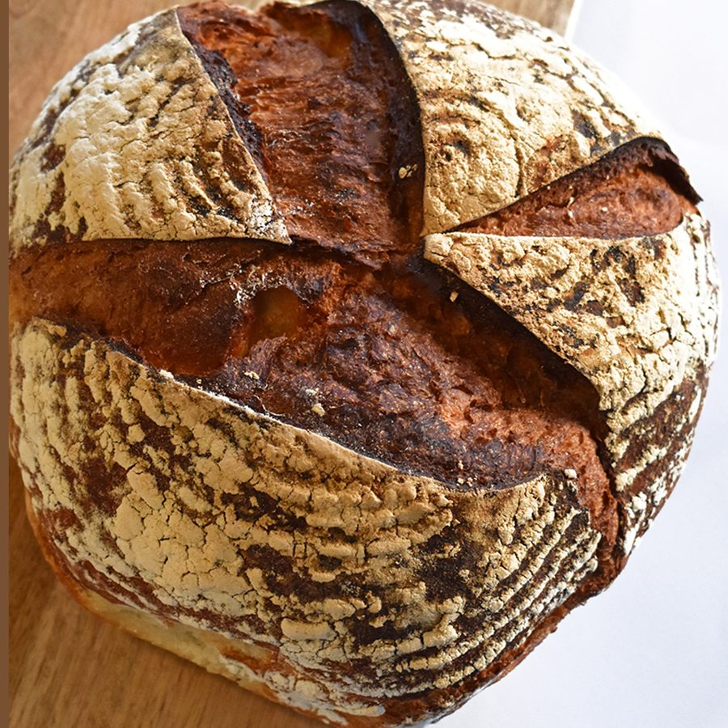
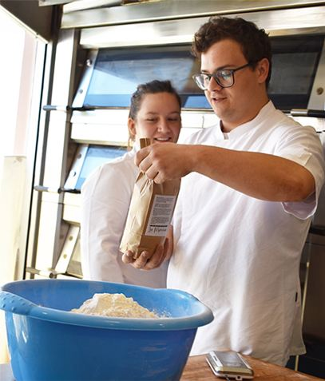
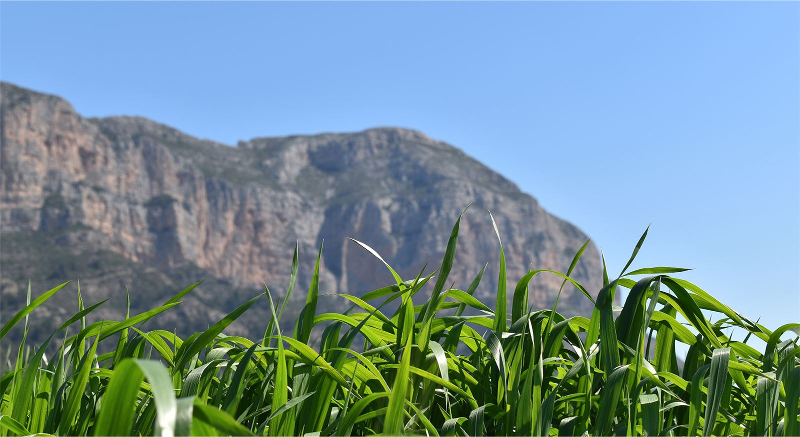
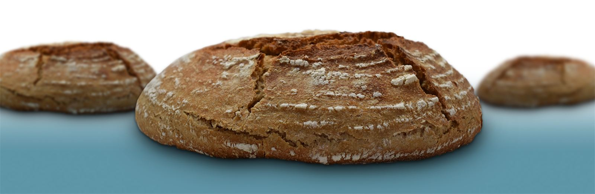
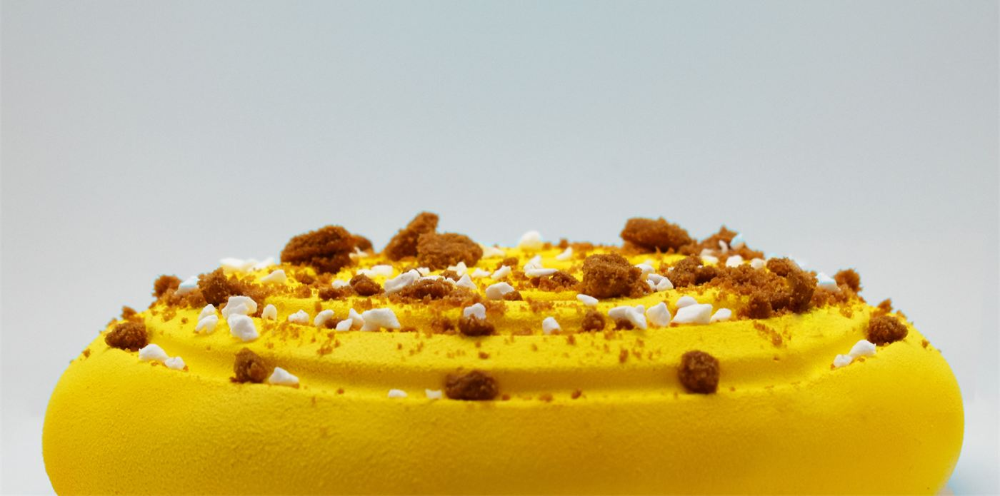
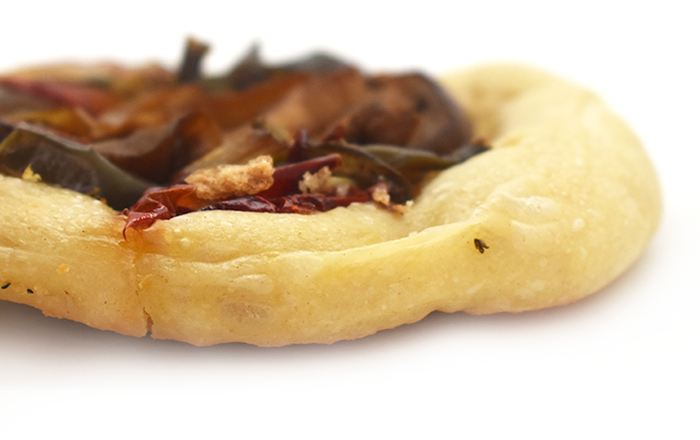
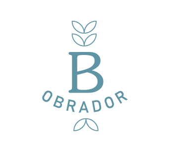
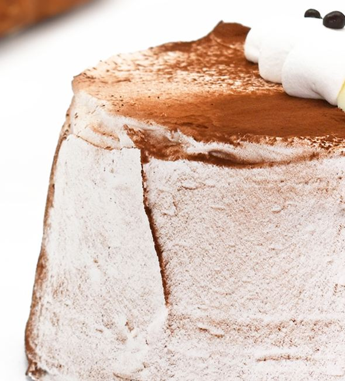

Martes
Hoy- Multicereales
- Blat de la Marina
- Pan inglés integral de molde
Mar–Vie 8:00–19:00 · Sáb–Dom 9:00–14:00
Trigo antiguo cultivado a los pies del Montgó, fermentaciones lentas y horno encendido cada mañana en la Avenida de Gandia.

01 Los hermanos Van Beek

Beekery nace del sueño de dos hermanos enamorados del oficio de la panadería tradicional. Tras clasificarse para un mundial de panadería y conseguir que su receta del Panou entrara en el Banco de Recetas de la UNESCO, la idea empezó a tomar forma.
Mientras Raquel trabajaba en algunas de las cocinas más prestigiosas del país, el proyecto se fue perfilando: traer a Dénia una panadería que no entiende de prisas, que basa su éxito en el trabajo diario, en el compromiso con la salud de quien la come y en recuperar las mejores materias primas.
En el obrador innovamos para ofrecer sabores nuevos, siempre con la misma filosofía: ingredientes naturales y de proximidad.

02 Blat de la Marina
Gracias al proyecto Blat de la Marina recuperamos el cultivo y la molienda de variedades de grano antiguas, con beneficios muy interesantes para la salud. Volvemos a conectar la cadena que unía a labradores, moledores y artesanos.
Variedades antiguas de trigo vuelven a los campos de la Marina Alta.
El grano se muele cerca, sin viajar medio mundo para llegar al obrador.
La masa descansa el tiempo que necesita. Ni una hora menos.
Cada mañana, en Dénia. Del campo a tu mesa con muy pocos pasos entre medias.
03 Agenda de pan
Algunos panes solo salen del horno un día a la semana. Mira cuál toca hoy y, si no quieres quedarte sin él, pídenos que te lo guardemos.
Los lunes el horno descansa.
Guárdame un pan por WhatsApp04 Nuestra carta

Fermentaciones largas y harinas que se notan. Algunos panes salen solo ciertos días: consulta la agenda.

Pastelería fresca de vitrina. Tres de ellos, 100% vegetales.

La coca de siempre de la Marina, con masa de obrador.

Hojaldres, rolls, galletas y empanadillas para el almuerzo.

Enteras por encargo o al corte en vitrina. Encarga la tuya →
Lo que marca el calendario. Pregunta por fechas y encargos.
El sabor que recuerdas.
05 Encargos
Cuéntanos qué te apetece y para cuándo. Te contestamos por WhatsApp para confirmar el encargo.
06 Visítanos
| Martes | 8:00 – 19:00 |
|---|---|
| Miércoles | 8:00 – 19:00 |
| Jueves | 8:00 – 19:00 |
| Viernes | 8:00 – 19:00 |
| Sábado | 9:00 – 14:00 |
| Domingo | 9:00 – 14:00 |
| Lunes | Cerrado |
¿Prefieres recibirlo en casa? También estamos en Glovo.